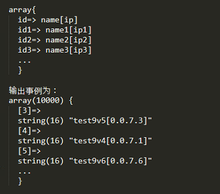
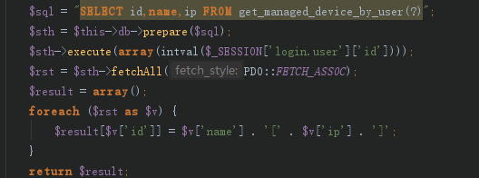
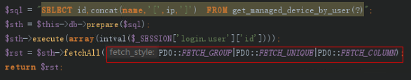
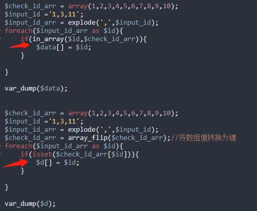
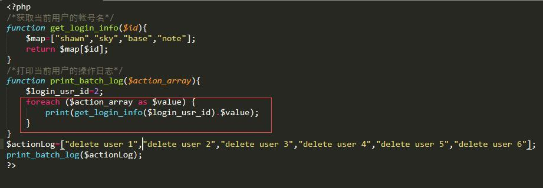

1.循环中有多次查询sql，改为在循环外一次查询后再处理
2.循环多次插入，改为组装好数据后批量插入
3.梳理业务逻辑能一次查完的，绝不分多次查
4.索引用起来
5.分页查询
根据业务需要，为了获取这种数据结构的数据如下：

以前的方式如下，对查询结果重新循环进行组装，会造成耗时

优化后的方式—通过PDO的fetchALL传入参数进行条件过滤即可，如下：

业务场景：判断传入的某个id值或id字符串是否在某个ids数据集中。


如上图红框位置处所示,在当前场景下其实每次循环中get_login_info函数并没有使用到循环变量，获取的返回值都是同一个值。这种场景应该把未用到循环变量的函数移动到循环外。